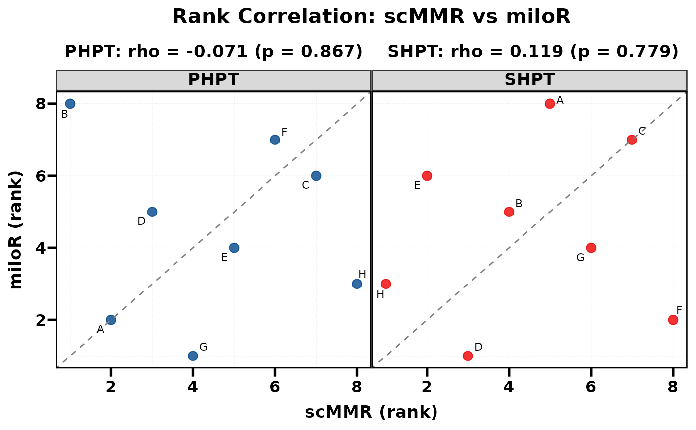
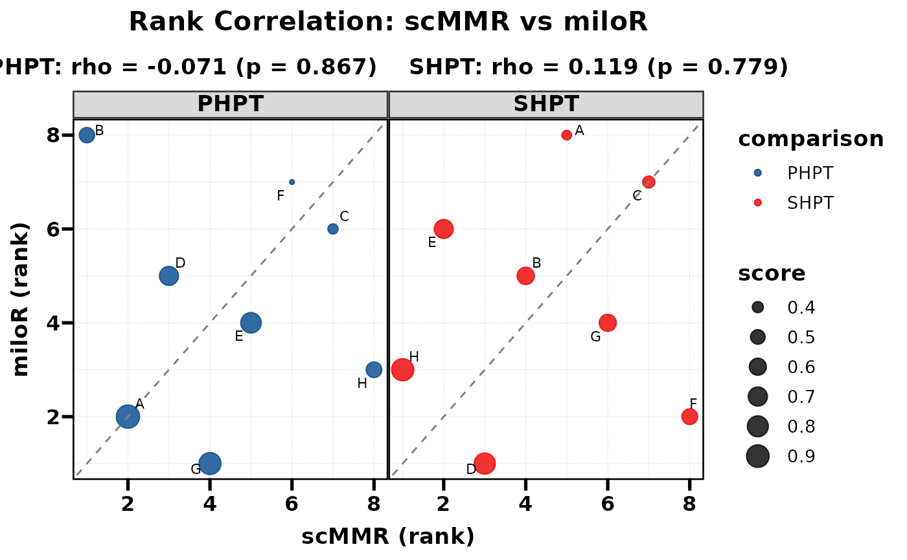
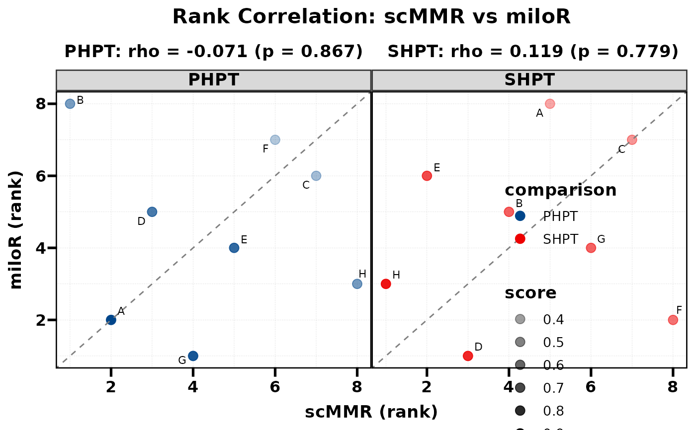
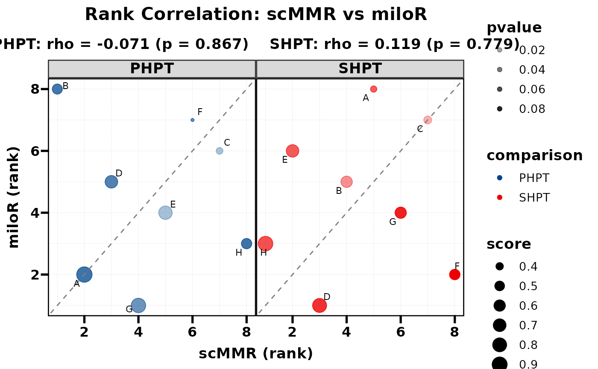

Compare two methods by plotting their ranks against each other. Spearman correlation and p-value are computed internally and displayed as subtitles. When multiple groups exist (e.g. PHPT vs SHPT), each group is shown as a separate facet with its own correlation statistics.
Usage
PlotRankCor(
data,
stat.by = NULL,
value.by = NULL,
group.by = NULL,
method.by = NULL,
use_rank = TRUE,
scale_x = "none",
scale_y = "none",
size_by = NULL,
size_range = c(1, 6),
alpha_by = NULL,
alpha_range = c(0.3, 1),
palette = NULL,
pt.size = 3,
alpha = 0.8,
label.size = 3,
max.overlaps = 20,
show.label = TRUE,
show.diag = TRUE,
title = NULL,
xlab = NULL,
ylab = NULL,
base_size = 13,
legend.position = "none",
width = 12,
height = 6,
filename = NULL
)Arguments
- data
Data frame in long format. Must contain columns specified by
stat.by,value.by,group.by, andmethod.by.- stat.by
Character. Column name for the category labels (e.g. cell type). Labels are shown via
geom_text_repel.- value.by
Character. Column name for the numeric score used to compute ranks. Ranks are computed as
rank(-score)(descending) within eachgroup.byxmethod.bycombination.- group.by
Character. Column name for the grouping / faceting variable (e.g. comparison). Each level gets its own facet panel. If
NULL, all data is treated as a single group (no faceting).- method.by
Character. Column name identifying the two methods. Must have exactly 2 unique levels; the first level maps to the x-axis and the second to the y-axis.
- use_rank
Logical. If
TRUE(default), plot ranks and compute Spearman correlation. IfFALSE, plot raw values and compute Pearson correlation.- scale_x
Character. Scaling method for x-axis values (only when
use_rank = FALSE). One of"none"(default),"minmax","zscore","log1p", or"rank". Applied per group.- scale_y
Character. Scaling method for y-axis values (only when
use_rank = FALSE). Same options asscale_x.- size_by
Character or
NULL. Column name for a numeric variable to map to point size. The column values are aggregated (mean) across the two methods per stat x group combination. A continuous size scale is added to the plot. DefaultNULL(all points use fixedpt.size).- size_range
Numeric vector of length 2. Range of point sizes when
size_byis specified. Defaultc(1, 6).- alpha_by
Character or
NULL. Column name for a numeric variable to map to point transparency (alpha), producing a colour-depth effect – darker points indicate higher values. Values are aggregated (mean) across the two methods per stat x group combination. Overrides the fixedalpha. Similar toalpha.byinPlotButterfly. DefaultNULL(uniform alpha).- alpha_range
Numeric vector of length 2. Output alpha range for
alpha_bymapping. Defaultc(0.3, 1).- palette
Named or unnamed character vector of colours for
group.bylevels. DefaultNULLusesc("#B2182B", "#2166AC", ...)frompal_lancet.- pt.size
Numeric. Point size (used when
size_by = NULL). Default 3.- alpha
Numeric 0–1. Point transparency (used when
alpha_by = NULL). Default 0.8.- label.size
Numeric. Label text size. Default 3.
- max.overlaps
Integer. Maximum overlapping labels passed to
geom_text_repel. Default 20.- show.label
Logical. Whether to display text labels. Default
TRUE.- show.diag
Logical. Whether to show the diagonal reference line (y = x). Default
TRUE.- title
Character. Plot title. Default
NULL(auto-generated).- xlab
Character. X-axis label. Default
NULL(auto).- ylab
Character. Y-axis label. Default
NULL(auto).- base_size
Numeric. Base font size. Default 13.
- legend.position
Legend position. Default
"none".- width
Numeric. Output width in inches. Default 12.
- height
Numeric. Output height in inches. Default 6.
- filename
Character. File path to save the plot. Default
NULL(no saving).
Value
A ggplot object. The correlation results are also
attached as an attribute "cor_results" (a data frame with
columns: group, rho, p.value).
See also
Other plot:
PlotButterfly(),
PlotButterfly2(),
plt_cat(),
plt_cohen(),
plt_con(),
plt_dist(),
plt_radar(),
plt_sankey(),
plt_upset()
Examples
set.seed(42)
df <- data.frame(
cell_type = rep(LETTERS[1:8], times = 4),
score = runif(32, 0, 1),
pvalue = runif(32, 0, 0.1),
comparison = rep(rep(c("PHPT", "SHPT"), each = 8), 2),
method = rep(c("scMMR", "miloR"), each = 16)
)
# Basic usage
PlotRankCor(df, stat.by = "cell_type", value.by = "score",
group.by = "comparison", method.by = "method")
#> PHPT: rho = -0.071, p = 0.8665
#> SHPT: rho = 0.119, p = 0.7789

# With size mapping
PlotRankCor(df, stat.by = "cell_type", value.by = "score",
group.by = "comparison", method.by = "method",
size_by = "score", legend.position = "right")
#> PHPT: rho = -0.071, p = 0.8665
#> SHPT: rho = 0.119, p = 0.7789

# With alpha depth (darker = higher score)
PlotRankCor(df, stat.by = "cell_type", value.by = "score",
group.by = "comparison", method.by = "method",
alpha_by = "score")
#> PHPT: rho = -0.071, p = 0.8665
#> SHPT: rho = 0.119, p = 0.7789

# Combined: size + alpha depth
PlotRankCor(df, stat.by = "cell_type", value.by = "score",
group.by = "comparison", method.by = "method",
size_by = "score", alpha_by = "pvalue",
legend.position = "right")
#> PHPT: rho = -0.071, p = 0.8665
#> SHPT: rho = 0.119, p = 0.7789
